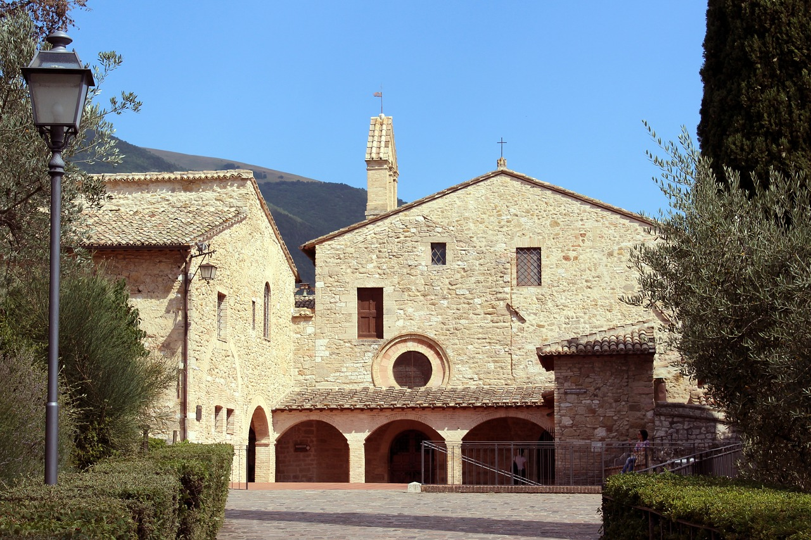

La fundación y San Damián
En 1212, Clara abandona su hogar noble y se instala en el pequeño convento de San Damián, que Francisco había reconstruido con sus propias manos. Allí comienza una vida de oración, pobreza y fraternidad que se extendería por el mundo.
La Regla de Santa Clara
Inspirada por Francisco pero escrita por Clara, la Regla fue aprobada por el Papa Inocencio IV en 1253, pocos días antes de su muerte. Clara se convierte así en la primera mujer que escribe una regla para mujeres y logra su aprobación eclesial.

Santas Clarisas
- Santa Inés de Praga – Princesa bohemia, amiga y discípula de Clara.
- Santa Coleta de Corbie – Reformadora de la orden en el siglo XV.
- Santa Catalina de Bolonia – Mística, artista y escritora.
- Santa Verónica Giuliani – Estigmatizada, ejemplo de profunda unión con Cristo.
- Santa Eustochia Calafato – Figura destacada del siglo XV en Sicilia.

El hábito clarisa
El hábito franciscano refleja humildad y sencillez: túnica marrón, cinturón de cuerda, velo negro o blanco y sandalias. Cada elemento habla de obediencia, penitencia y desapego.

Clarisas en el mundo hoy
Más de 20.000 Clarisas en el mundo. En España hay cerca de 180 conventos. Su vida en silencio, oración y trabajo es semilla fecunda de fe y contemplación.

¿Por qué siguen siendo actuales?
En un mundo saturado de ruido y prisa, las Clarisas ofrecen un espacio de silencio, escucha y paz. Su vida escondida es un corazón orante que late por la Iglesia y por el mundo entero.